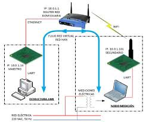
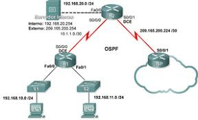
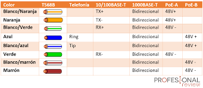
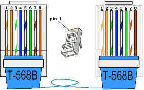
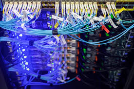
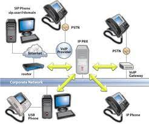
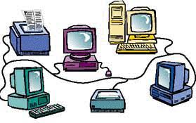

Habilidades obtenidas

1Configuracion de redes
Se configuran los dibersos tipos de redes asi como son la vlan, redes man , wan y lan
2Configuracion de equipos
Configuracion de routers y switch mediante uso del Cli y Gui para la comunicacion entre equipos
3Cableado
Configuracion para el cableado tipo a y b de los cables cruzados
4Protocolos de red
Uso de software para ver el trafico de informacion mediante las tramas y protocolos establecidos
Imagenes relacionadas con el laboratorio





